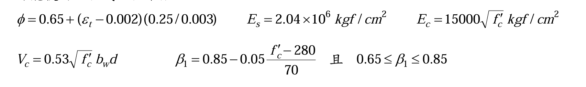
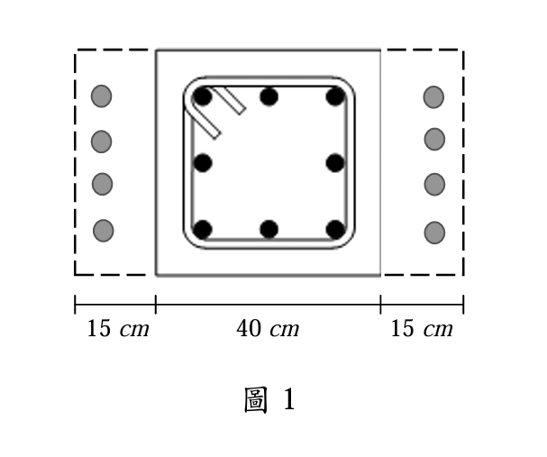
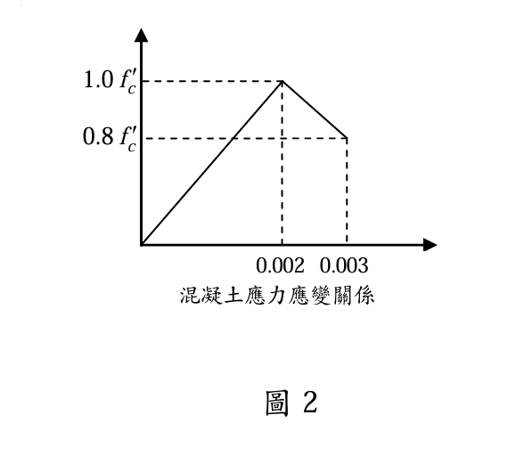
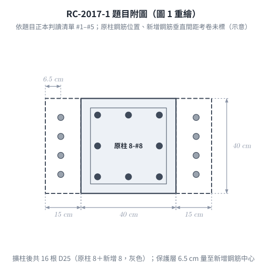
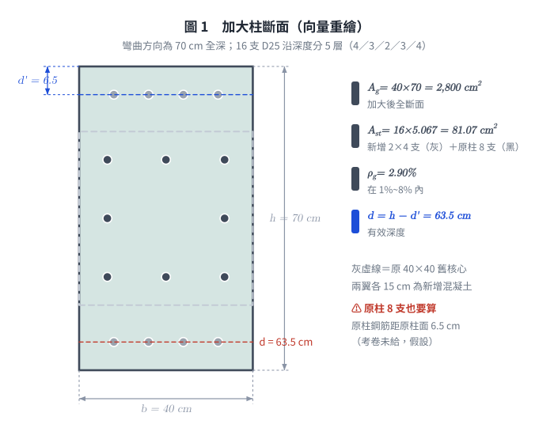
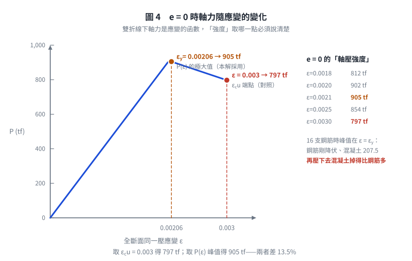
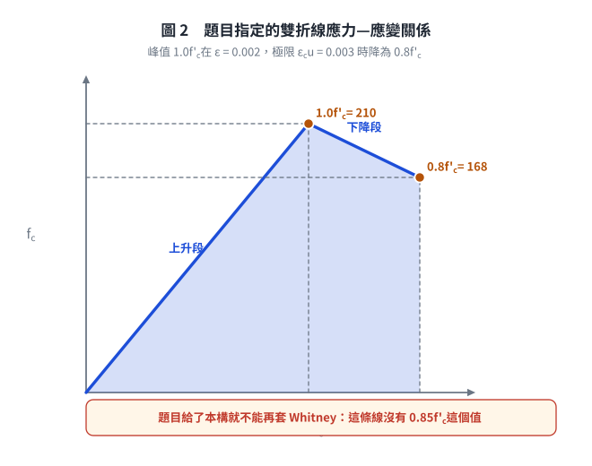
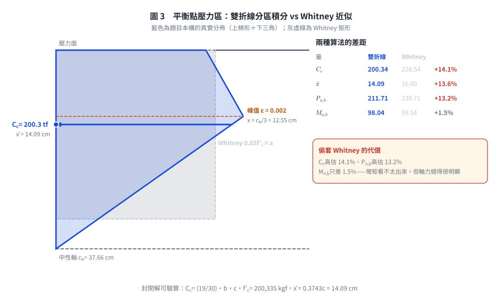

📄 題目正本：考卷原文・附圖・判讀清單（已確認）
RC-2017-1 題目正本
本檔只記錄考卷上寫了什麼、圖上畫了什麼，不含任何解法。解析見同資料夾
RC-2017-1.md。
判讀清單已經使用者確認（凍結）；本檔原則上不再修改（改動須回考卷原圖並記 log）。
| 項目 | 內容 |
|---|---|
| 考卷 | raw/exams/RC-2017_鋼筋混凝土設計與預力.pdf 第 1 頁（全一頁），第一題 |
| 考年 | 民國 106 年（2017） |
| 配分 | 25 分 |
| 附圖 | RC-2017-1-fig-1.png（圖 1，擴柱斷面）、RC-2017-1-fig-2.png（圖 2，混凝土應力應變關係）；卷首公式 RC-2017-1-eqn-1.png |
| 判讀狀態 | 已確認（2026-11-14 使用者確認；影響答案項目使用者選擇：#1 擴柱後共 16 根（原 8＋新 8）；#2 保護層 6.5 cm 量至鋼筋中心；#3 原柱鋼筋位置須自行假設；轉錄 2026-11-14；PyMuPDF 110 dpi 全頁目視＋抽出文字核對，圖 1 以 450 dpi 放大；盲讀後才比對既有解析） |
1. 考卷原文（逐字）
一、柱斷面為 40cm×40cm，配置 8 根 D25（#8）鋼筋（$f_y$= 4,200 kgf/cm²，$A_b$= 5.067cm²），如圖 1 所示。混凝土強度 $f'_c$= 210 kgf/cm²，經耐震評估後，發現必須擴柱為 40cm×70cm，使用常重混凝土，$f'_c$= 210 kgf/cm²，鋼筋為 8 根 D25（#8），分布於長向之兩邊，保護層 6.5cm，試求偏心 e = 0 時的軸力強度與適當軸力下長邊所能承受最大可能彎矩。混凝土之應力應變關係可簡化如圖 2。（25 分）
2. 考卷給的公式、附表與參數
- 題文數值：原柱 40×40 cm、8-D25（#8），$f_y=4200$ kgf/cm²，$A_b=5.067$ cm²，$f'_c=210$ kgf/cm²；擴柱後 40×70 cm，新混凝土 $f'_c=210$ kgf/cm²，新增鋼筋 8 根 D25（#8）分布於長向之兩邊，保護層 6.5 cm。
- 卷首：「使用規範：土木水利 401-100，否則不計分。」
- 卷首「可能使用之公式，但不限於」（
RC-2017-1-eqn-1.png）：$\phi=0.65+(\varepsilon_t-0.002)(0.25/0.003)$；$E_s=2.04\times10^6$ kgf/cm²；$E_c=15000\sqrt{f'_c}$ kgf/cm²；$V_c=0.53\sqrt{f'_c}b_wd$；$\beta_1=0.85-0.05\dfrac{f'_c-280}{70}$ 且 $0.65\le\beta_1\le0.85$。

- 圖 2 給混凝土應力應變關係（見 §3）。
- 沒有給：原柱 8 根鋼筋在 40×40 內的位置（保護層）、新增鋼筋的垂直間距、保護層 6.5 cm 量到哪裡（淨保護層或至鋼筋中心）、新增部分的箍筋、擴柱後總鋼筋數是否包含原柱鋼筋。
- 卷首注意事項：㈠可以使用電子計算器。㈡不必抄題，作答時請將試題題號及答案依照順序寫在試卷上，於本試題上作答者，不予計分。㈢本科目除專門名詞或數理公式外，應使用本國文字作答。
3. 附圖

圖面文字照錄：「15 cm」「40 cm」「15 cm」「圖 1」。

圖面文字照錄：「1.0 f'c」「0.8 f'c」「0.002」「0.003」「混凝土應力應變關係」「圖 2」。
4. 判讀清單
| # | 項目 | 判讀 | 圖上／題文依據 | 把握 |
|---|---|---|---|---|
| 1 | 擴柱後的總鋼筋 | 圖 1 同時畫出原柱 8 根（黑）與新增 8 根（灰），題文「鋼筋為 8 根 D25…分布於長向之兩邊」描述新增鋼筋 → 判讀擴柱後共 16 根（原 8＋新 8）參與；另一讀法為只計新增 8 根 | 圖 1、題文 | 不確定（影響答案，請確認）；使用者確認 |
| 2 | 保護層 6.5 cm 的量測基準 | 未說明是淨保護層（鋼筋中心距外緣 $6.5+2.54/2=7.77$ cm，若另有箍筋再加箍筋直徑）或量至鋼筋中心（6.5 cm）；圖未依比例，灰色鋼筋中心約在距外緣 5 cm 處，無法佐證 | 題文；圖 1 無尺寸 | 不確定（影響答案，請確認）；使用者確認 |
| 3 | 原柱鋼筋位置 | 考卷未給原柱保護層；圖上原柱每邊 3 根（四角＋中點），距原柱面約 8.6 cm（量圖，不依比例） | 圖 1 量測 | 不確定（解讀）（若計入原柱鋼筋則影響答案）；使用者確認 |
| 4 | 擴柱方向與尺寸 | 原柱左右各加 15 cm → 40（高）×70（寬）cm；長向＝70 cm 方向 | 圖 1 下方 15／40／15 cm | 確定 |
| 5 | 新增鋼筋 | 左右擴柱部分各 1 縱列 4 根 #8，位於長向兩端 | 圖 1 灰色圓點 4＋4 | 確定 |
| 6 | 「長邊所能承受最大可能彎矩」 | 沿長向（深度 70 cm）彎曲；「適當軸力下…最大可能彎矩」＝標稱交互曲線上 $M_n$ 的最大值（軸力可自由選）；是否乘 $\phi$ 題文未說明 | 題文 | 確定（解讀） |
| 7 | 「偏心 e = 0 時的軸力強度」 | 同心軸力強度（標稱 $P_0$；是否再取規範上限 $0.80\phi P_0$ 題文未說明） | 題文 | 確定（解讀） |
| 8 | 混凝土應力應變關係 | 以圖 2 取代矩形應力塊：$0\to f'_c$ 線性至 $\varepsilon=0.002$，再線性降至 $0.8f'_c$ 於 $\varepsilon_{cu}=0.003$ | 圖 2 | 確定 |
| 9 | 新舊混凝土 | 強度同為 210 kgf/cm²，視為一體（第二題才處理介面） | 題文 | 確定（解讀） |
| 10 | 新增部分的橫向鋼筋 | 圖上未畫箍筋；考卷未給 | 圖 1 | 確定 |
轉錄：2026-11-14（RC-U1-2 題目正本推廣・批 1）
確認：2026-11-14 使用者確認（RC-U1-2 題目正本推廣・批 1，關卡一）
考題編號：RC-2017-1
主分類： RC-U1-2 RC 柱強度分析與設計
副分類： 無
設計法： USD強度設計法
標籤： 加大柱 組合截面 軸壓強度 雙折線應力應變 最大可用軸力 締箍柱 最小偏心 新舊混凝土
1. 題目（考卷原文見題目正本）
考卷原文、公式／附表、附圖與判讀清單（已確認）見
RC-2017-1-problem.md。本節只列解題時最容易讀錯的地方與本解使用的記號；題意以題目正本為準。

重繪自考卷附圖，依題目正本判讀清單；攔下漏掉原柱 8 根鋼筋、把保護層基準弄錯的錯誤。
常見誤讀
| 項目 | 正確判讀 | 常見誤讀 |
|---|---|---|
| 擴柱後鋼筋 | 原柱 8 根＋新增 8 根，共 16 根 D25（判讀 #1，使用者確認） | 只計新增 8 根 |
| 保護層 6.5 cm | 量至新增鋼筋中心（判讀 #2，使用者確認） | 當淨保護層（中心距外緣 7.77 cm） |
| 原柱鋼筋位置 | 考卷沒有給（判讀 #3），須自行假設 | 當作已知 |
| 混凝土應力應變 | 用圖 2 自訂雙折線，$\varepsilon_{cu}=0.003$ 時 $0.8f'_c$（判讀 #8） | 仍套 Whitney 矩形應力塊 |
| $e=0$ 軸力強度 | 取 $P(\varepsilon)$ 的峰值（16 根時在 $\varepsilon=\varepsilon_y$，904.8 tf；2026-11-14 使用者定案） | 直接取 $\varepsilon=0.003$、$0.8f'_c$ 當唯一答案 |
本解記號： 擴柱後 $b=40$ cm、$h=70$ cm（彎曲方向）；$f'_c=210$ kgf/cm²（新舊相同）、$f_y=4200$ kgf/cm²、$A_b=5.067$ cm²；新增鋼筋距外緣 6.5 cm（中心）；原柱鋼筋假設距原柱面 6.5 cm（考卷未給，使用者定案）→ 沿彎曲深度 5 層 6.5／21.5／35／48.5／63.5 cm（4／3／2／3／4 根）。
判讀圖解（解析自繪）
圖 1（擴柱後 16 支 D25 的斷面重繪）見 §4 Step 1。
2. 考題核心精神與出題者意圖 (Core Concepts & Examiner's Intent)
核心觀念： 本題是「加大柱（Column Jacketing）」的強度計算，考驗三項能力：
- 讀懂擴柱後的配筋：原柱 8 根仍在，新增 8 根集中在長向兩端——擴柱後共 16 根 D25，沿彎曲深度分 5 層（4／3／2／3／4）
- 以題給本構求 $e=0$ 強度：全斷面同一應變 $\varepsilon$，$P(\varepsilon)=f_c(\varepsilon)(A_g-A_{st})+f_s(\varepsilon)A_{st}$；圖 2 混凝土在 0.002 達峰值後下降、鋼筋在 $\varepsilon_y$ 才降伏，「強度」是 $P(\varepsilon)$ 的最大值
- 對雙折線分區積分：偏心受壓時壓力區應力不是常數，在 $\varepsilon=0.002$ 有轉折，須切成梯形段＋三角形段分別求合力與形心，不能套 $C_c=0.85f'_c\,a\,b$
出題者意圖：
- 測試「題目另給應力-應變模型時，不應自動套用 Whitney $0.85f'_c$」
- 測試擴柱後新舊鋼筋共同作用的斷面分析（多層鋼筋的應變相容）
- 測試「適當軸力下最大彎矩」＝交互曲線的鼻端，發生在平衡點附近
3. 解題戰略地圖與陷阱分析 (Strategic Roadmap & Trap Analysis)
作戰計畫：
- 斷面幾何：$A_g$、$A_{st}=16A_b$、$\rho_g$
- 原柱鋼筋位置考卷未給 → 假設距原柱面 6.5 cm（與新增鋼筋同保護層）
- 【e＝0】寫出 $P(\varepsilon)$，在 $0.002\le\varepsilon\le0.003$ 找最大值（混凝土下降、鋼筋上升的交換點）
- 【最大彎矩】平衡條件求 $c_b$（最外拉力筋 $\varepsilon_t=\varepsilon_y$）
- 壓力區分區積分：梯形段（$0.8f'_c\to f'_c$）＋三角形段（$f'_c\to0$）
- 5 層鋼筋各自由應變求應力；受壓者扣該位置的雙折線混凝土應力
- 對斷面形心取矩 → $M_{n,b}$；以 c 掃描確認平衡點即彎矩最大值
關鍵陷阱：
| # | 陷阱 | 正確做法 |
|---|---|---|
| 1 | 只算新增 8 根：以為題文「鋼筋為 8 根 D25」就是全部 | 圖 1 原柱 8 根（黑）仍在，擴柱後共 16 根（關卡一確認） |
| 2 | $e=0$ 直接取 $\varepsilon=0.003$：把 $0.8f'_c$ 當成唯一答案 | $P(\varepsilon)$ 的峰值在 $\varepsilon=\varepsilon_y=0.00206$：905 tf；0.003 時只有 797 tf |
| 3 | 套用 Whitney $0.85f'_c$ | 題目給了本構就照本構積分 |
| 4 | 壓力筋扣 $0.85f'_c$ | 扣的是該位置的雙折線應力（例：$\varepsilon=0.00248$ 處為 189.7） |
| 5 | 中間各層鋼筋當成降伏 | 原柱三層應變只有 0.0013、0.0002、−0.0009，都未降伏 |
3.5 變數層次分析 (Variable Hierarchy Analysis)
複習提示：第一次解題後，在每個卡住的知識點旁標記
⚠；第二次複習時只看有⚠的項目。
最終目標
(a) 偏心 $e=0$ 時的軸力強度 $P_n(e=0)$；(c) 適當軸力下長邊最大可能彎矩 $M_{n,\max}$（另附 (b) 規範設計軸力上限）
本題關鍵公式（依計算順序）
$$\text{Step 1: } f_c(\varepsilon) = \begin{cases} f'_c\,\varepsilon/0.002 & \varepsilon\le0.002\\ f'_c\left[1-0.2(\varepsilon-0.002)/0.001\right] & 0.002<\varepsilon\le0.003\end{cases}$$
$$\text{Step 2: } P(\varepsilon) = f_c(\varepsilon)\,(A_g-A_{st}) + \min(E_s\varepsilon,f_y)\,A_{st} \;\Rightarrow\; P_n(e=0)=\max_\varepsilon P(\varepsilon)$$
$$\text{Step 3: } c_b = \frac{\varepsilon_{cu}}{\varepsilon_{cu}+\varepsilon_y}\,d,\qquad x_{pk}=\frac{\boxed{c_b}}{3}$$
$$\text{Step 4: } C_c = \underbrace{b\,x_{pk}\tfrac{0.8f'_c+f'_c}{2}}_{C_1} + \underbrace{b(\boxed{c_b}-x_{pk})\tfrac{f'_c}{2}}_{C_2}=\tfrac{19}{30}\,b\,c_b\,f'_c,\quad \bar x_c = 0.3743\,c_b$$
$$\text{Step 5: } F_i = A_i\left[f_s(\varepsilon_i) - f_c(\varepsilon_i)\right],\quad \varepsilon_i = \varepsilon_{cu}\frac{\boxed{c_b}-d_i}{\boxed{c_b}}$$
$$\text{Step 6: } M_{n,b} = \boxed{C_c}\left(\frac h2-\boxed{\bar x_c}\right) + \sum F_i\left(\frac h2 - d_i\right)$$
L1：題目直接給定
| 符號 | 數值 | 說明 |
|---|---|---|
| $b\times h$ | 40×70 cm | 擴柱後（$h$ 為彎曲方向） |
| $f'_c$ | 210 kgf/cm² | 新舊混凝土相同 |
| $f_y$ | 4200 kgf/cm² | |
| $A_b$ | 5.067 cm² | D25 |
| 鋼筋 | 原柱 8＋新增 8 | 共 16 根（判讀 #1） |
| 保護層 | 6.5 cm | 量至新增鋼筋中心（判讀 #2） |
| 本構 | 圖 2 雙折線 | 峰值 $f'_c$@0.002、$0.8f'_c$@0.003 |
| $E_s$ | 2.04×10⁶ kgf/cm² | 卷首公式 |
L2：需知識點推導
| 符號 | 公式／來源 | 卡關? |
|---|---|---|
| 原柱鋼筋 | 假設距原柱面 6.5 cm → 距壓力面 21.5／35／48.5 cm（3／2／3 根） | ⚠ |
| 各層 $d_i$ | 6.5（4）、21.5（3）、35（2）、48.5（3）、63.5（4） | |
| $A_{st}$ | $16\times5.067=81.07$ cm² | |
| $\varepsilon_y$ | 0.002059 | |
| $P_n(e=0)$ | 峰值在 $\varepsilon_y$：904.8 tf | ⚠ |
| $c_b$ | $0.5930\times63.5=37.66$ cm | |
| $C_c$、$\bar x_c$ | 200.3 tf、14.09 cm | |
| $P_{n,b}$、$M_{n,b}$ | 211.7 tf、98.04 tf·m |
L3：深層知識（不懂就卡住）
| 知識點 | 說明 | 卡關? |
|---|---|---|
| 軸壓強度＝$P(\varepsilon)$ 的最大值 | 混凝土過峰後下降、鋼筋到 $\varepsilon_y$ 才平台；兩者疊加的峰值落在 $\varepsilon_y$（鋼筋多時）或 0.002（鋼筋少時） | ⚠ |
| 雙折線閉合解 | $c\le h$ 時 $C_c=\tfrac{19}{30}bcf'_c$、$\bar x_c=0.3743c$ | |
| 最大彎矩在平衡點 | $c<c_b$ 時最外拉力筋已降伏，彎矩隨 c 減小而下降；$c>c_b$ 時拉力筋應力下降，彎矩也下降 | |
| 新舊混凝土一體 | 強度同為 210，介面剪力在第二題才處理 |
4. 步驟化詳細計算過程 (Step-by-Step Detailed Calculation)
【前置】材料參數確認
| 參數 | 數值 | 來源 |
|---|---|---|
| $f'_c$ | 210 kgf/cm² | 題目（新舊相同） |
| $f_y$ | 4,200 kgf/cm² | 題目 |
| $E_s$ | $2.04\times10^6$ kgf/cm² | 卷首公式 |
| $\varepsilon_y$ | $4200/2.04\times10^6=0.002059$ | 計算 |
| 本構 | 圖 2 雙折線 | 題目 |
【Step 1】斷面幾何與鋼筋分層
$$A_g = 40\times70 = 2{,}800\text{ cm}^2,\qquad A_{st} = 16\times5.067 = 81.07\text{ cm}^2,\qquad \rho_g = 2.90\%$$
原柱 40×40 位於中央（距兩端各 15 cm），原柱鋼筋假設距原柱面 6.5 cm（考卷未給，2026-11-14 使用者定案）。沿彎曲深度（自壓力面）：
| 層 | $d_i$ (cm) | 根數 | $A_i$ (cm²) | 來源 |
|---|---|---|---|---|
| 1 | 6.5 | 4 | 20.27 | 新增 |
| 2 | 21.5 | 3 | 15.20 | 原柱 |
| 3 | 35.0 | 2 | 10.13 | 原柱 |
| 4 | 48.5 | 3 | 15.20 | 原柱 |
| 5 | 63.5 | 4 | 20.27 | 新增 |

圖 1 加大柱斷面（向量重繪）。原柱 8 支（黑）仍在，新增 8 支（灰）在長向兩端——擴柱後共 16 支，沿深度 4／3／2／3／4 五層；原柱鋼筋距原柱面 6.5 cm 為假設。
【Part (a)：偏心 $e=0$ 時的軸力強度】
全斷面同一壓應變 $\varepsilon$：
$$P(\varepsilon) = f_c(\varepsilon)\,(2{,}800-81.07) + \min(E_s\varepsilon,\,4200)\times81.07$$
| $\varepsilon$ | 0.0018 | 0.0020 | $\varepsilon_y$＝0.002059 | 0.0025 | 0.0030 |
|---|---|---|---|---|---|
| $f_c$ | 189.0 | 210.0 | 207.5 | 189.0 | 168.0 |
| $f_s$ | 3,672 | 4,080 | 4,200 | 4,200 | 4,200 |
| $P$ (tf) | 811.6 | 901.7 | 904.8 | 854.4 | 797.3 |
- $\varepsilon<\varepsilon_y$：混凝土與鋼筋都在上升（或混凝土剛過峰），$P$ 仍增加
- $\varepsilon>\varepsilon_y$：鋼筋進入平台，混凝土每 0.001 應變掉 $0.2f'_c$，$P$ 開始下降
$$\boxed{P_n(e=0) = 207.5\times2{,}718.9 + 4{,}200\times81.07 = 564{,}258 + 340{,}502 \approx 904.8\text{ tf}}$$
（取 $\varepsilon_{cu}=0.003$ 時為 797.3 tf，見 §5。）

圖 4 $e=0$ 時軸力隨應變的變化。16 支鋼筋時峰值在 $\varepsilon_y$（鋼筋剛降伏、混凝土 207.5）；再壓下去混凝土掉得比鋼筋增加得多。
【Part (b)（附）：規範設計軸力上限】
現行規範箍筋柱 $\phi P_{n,\max}=0.80\,\phi P_o$，$P_o$ 依規範用 $0.85f'_c$：
$$P_o = 0.85\times210\times2{,}718.9 + 4{,}200\times81.07 = 825.8\text{ tf},\qquad \phi P_{n,\max} = 0.80\times0.65\times825.8 = 429.4\text{ tf}$$
（考卷未問此值；若改以圖 2 的 904.8 tf 代入為 470.5 tf。）
【Part (c)：適當軸力下長邊最大可能彎矩】
Step 1 平衡點中性軸
$$c_b = \frac{0.003}{0.003+0.002059}\times63.5 = 37.66\text{ cm},\qquad x_{pk} = c_b/3 = 12.55\text{ cm}\ (\varepsilon=0.002)$$
Step 2 壓力區分區積分
$$C_1 = \frac{168+210}{2}\times12.55\times40 = 94{,}896\text{ kgf},\quad \bar x_1 = 12.55\times\frac{168+2\times210}{3(168+210)} = 6.51\text{ cm}$$
$$C_2 = \frac{210}{2}\times25.10\times40 = 105{,}440\text{ kgf},\quad \bar x_2 = 12.55 + 25.10/3 = 20.92\text{ cm}$$
$$C_c = 200{,}335\text{ kgf} = \tfrac{19}{30}\times40\times37.66\times210\ ✓,\qquad \bar x_c = \frac{94{,}896\times6.51+105{,}440\times20.92}{200{,}335} = 14.09\text{ cm}$$
Step 3 各層鋼筋（受壓者扣該處雙折線應力）
| $d_i$ | $\varepsilon_i$ | $f_s$ | 扣 $f_c(\varepsilon_i)$ | $F_i$ (kgf) | 臂 $35-d_i$ | 矩 (kgf·cm) |
|---|---|---|---|---|---|---|
| 6.5 | +0.002482 | 4,200 | 189.7 | +81,280 | 28.5 | 2,316,500 |
| 21.5 | +0.001287 | 2,626 | 135.2 | +37,861 | 13.5 | 511,100 |
| 35.0 | +0.000212 | 432 | 22.2 | +4,151 | 0 | 0 |
| 48.5 | −0.000864 | −1,762 | — | −26,787 | −13.5 | 361,600 |
| 63.5 | −0.002059 | −4,200 | — | −85,126 | −28.5 | 2,426,100 |
Step 4 軸力與彎矩
$$P_{n,b} = 200{,}335 + 81{,}280 + 37{,}861 + 4{,}151 - 26{,}787 - 85{,}126 = 211{,}713\text{ kgf} \approx 211.7\text{ tf}$$
$$M_{n,b} = 200{,}335\times(35-14.09) + 2{,}316{,}500 + 511{,}100 + 361{,}600 + 2{,}426{,}100 = 9{,}803{,}500\text{ kgf·cm}$$
$$\boxed{M_{n,\max} = M_{n,b} \approx 98.04\text{ tf·m}\quad(\text{對應 } P_n \approx 211.7\text{ tf})}$$
Step 5 確認平衡點即最大值
以 $c$ 由 20 到 60 cm 掃描（纖維數值積分為第二路徑），$M_n$ 的最大值發生在 $c=37.66$ cm（＝$c_b$），兩種積分結果一致（98.04 tf·m）。$c<c_b$ 時最外拉力筋已降伏，壓力區縮小使彎矩下降；$c>c_b$ 時拉力筋應力下降，彎矩也下降。
Step 6 設計值（參考）
平衡點 $\varepsilon_t=\varepsilon_y$ 屬壓力控制，$\phi=0.65$：$\phi M_n = 63.7$ tf·m、$\phi P_n = 137.6$ tf（題文只問「最大可能彎矩」，主答為標稱值）。

圖 2 題目指定的雙折線本構：峰值 $f'_c$ 在 0.002，極限 0.003 時降為 $0.8f'_c$。這條線上沒有 $0.85f'_c$ 這個值。

圖 3 平衡點壓力區：雙折線分區積分 vs Whitney。套 Whitney 會高估 $C_c$ 14.1%、$P_{n,b}$ 13.2%，彎矩只差 1.5%——彎矩看不太出來，軸力錯得很明顯。
【結論】
| 項目 | 方法 | 答案 |
|---|---|---|
| (a) 偏心 $e=0$ 的軸力強度 | 圖 2 本構，$P(\varepsilon)$ 峰值（$\varepsilon=\varepsilon_y$） | $\boxed{904.8\text{ tf}}$ |
| (c) 長邊最大可能彎矩 | 平衡點，雙折線分區積分＋5 層鋼筋 | $\boxed{98.04\text{ tf·m}}$（$P_n=211.7$ tf） |
| (b) 附：規範設計軸力上限 | $0.80\times0.65\times P_o$（$0.85f'_c$） | 429.4 tf |
5. 關鍵爭議點與進階探討 (Critical Issues & Advanced Discussion)
① 舊版解析的讀題錯誤（2026-11-14 勘誤）
舊版只計新增 8 根 D25，並以 $\varepsilon=0.003$ 定義 $e=0$ 強度，得 $P_n(e=0)=634$ tf、$\phi P_{n,\max}=330$ tf、$M_{n,b}=89.3$ tf·m（$P_{n,b}=197$ tf）、$\phi M_{n,b}=58.5$ tf·m。題目正本（關卡一確認）為擴柱後共 16 根：$P_n(e=0)=904.8$ tf、$M_{n,\max}=98.04$ tf·m。舊版在「只算 8 根」的前提下計算正確（本次重算 89.25 tf·m 相同）。
② $e=0$ 強度取哪一點（2026-11-14 使用者定案）
| 定義 | $P_n(e=0)$ | 說明 |
|---|---|---|
| $P(\varepsilon)$ 峰值（主解） | 904.8 tf | 「強度」＝斷面能承受的最大軸力 |
| $\varepsilon_{cu}=0.003$ | 797.3 tf | 與交互曲線 $c\to\infty$ 端點一致，但不是最大值 |
| 規範 $0.85f'_c$（對照） | 825.8 tf | 不用圖 2 本構 |
| 只計新增 8 根（舊版讀法，峰值） | 744.9 tf | 判讀錯誤，僅供對照 |
③ 原柱鋼筋位置的影響
考卷沒有給原柱保護層。主解假設距原柱面 6.5 cm；若照圖面量測約 8.6 cm（圖不依比例），$M_{n,\max}=95.53$ tf·m（−2.6%），$P_n(e=0)$ 不受影響（同心受壓與位置無關）。
④ Whitney 對照
若不用圖 2、改用規範 Whitney（$\beta_1=0.85$，扣 $0.85f'_c$）：$c=36.15$ cm 時最大 $M_n=99.59$ tf·m（+1.6%），$P_{n,b}$ 則高估 13%。題目明示用圖 2，主解照本構。
⑤ 規範版本
卷首指定土木 401-100，並印出 $\phi=0.65+(\varepsilon_t-0.002)(0.25/0.003)$。依現行建築物混凝土結構設計規範（2023），過渡區自 $\varepsilon_{ty}$ 起算；本題平衡點 $\varepsilon_t=\varepsilon_{ty}$，兩式都得 $\phi=0.65$（考卷式得 0.655），只影響附註的設計值。卷首 $E_s$ 為數值參數照用；題目的雙折線本構屬題意條件，照用。
⑥ 新舊混凝土介面
本題視新舊混凝土完全一體（強度相同）；能否一體作用，取決於介面剪力傳遞與植筋——這是同卷第二題的內容。
圖解補繪：2026-08-21（向量圖 4 張，腳本 figs/gen_RC-2017-1.py，可重跑；腳本檔尾對 §4 公佈值做 assert）
修正日期：2026-11-14（§1 改為指向題目正本，插入重繪附圖 figs/RC-2017-1-fig-1-problem.svg、改寫常見誤讀與本解記號；刪除「8 支 D25 為題目講明」的加字（擴柱後 16 根，使用者確認）；本行非答案勘誤）
修正日期：2026-11-14（解析勘誤：鋼筋由只計新增 8 根改為擴柱後 16 根〔題目正本判讀 #1〕、原柱鋼筋假設距原柱面 6.5 cm、$e=0$ 強度改取 $P(\varepsilon)$ 峰值（使用者定案）；$P_n(e=0)$ 634 → 904.8 tf、$M_{n,\max}$ 89.3 → 98.04 tf·m；改寫 §2–§5、多層鋼筋斷面，重畫圖 1、3、4（gen 腳本對帳 25 項通過）。驗證：Python 重算 MISMATCHES: 0，壓力區以閉合式與纖維積分交叉、最大彎矩以求極值與 c 掃描交叉；依 RC-U1-2 批 1 盲解比對）